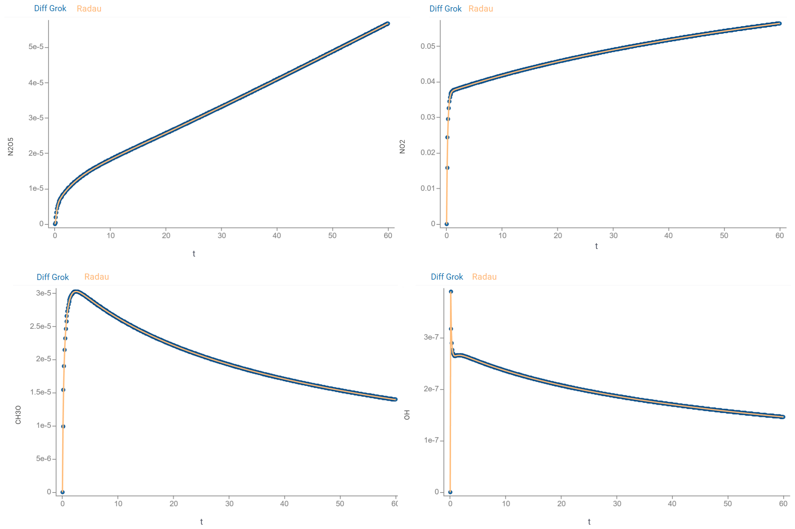

A lightweight TypeScript library for solving initial value problem (IVP) for ordinary differential equations (ODEs) using numerical methods. This library focuses on solving stiff equations.
To install via npm:
npm install diff-grok
Minimal "Hello World" example:
// example.ts
import {ODEs, mrt} from 'diff-grok';
const task: ODEs = {
name: 'Example',
arg: {name: 't', start: 0, finish: 1, step: 0.1},
initial: [1, -1],
func: (t: number, y: Float64Array, output: Float64Array) => {
out[0] = y[0] - t;
},
tolerance: 1e-7,
solutionColNames: ['y(t)'],
};
const solution = mrt(task);
console.log('t:', solution[0]);
console.log('y(t):', solution[1]);
To find numerical solution of a problem:
$$\frac{dy}{dt} = f(t, y)$$ $$y(t_{0}) = y_0$$
on the segment $[t_0, t_1]$ with the step $h$:
Import ODEs and a desired numerical method:
Specify ODEs object that defines a problem:
name - name of a model
arg - independent variable specification. This is in object with fields:
name - name of the argument, $t$start - initial value of the argument, $t_0$finish - final value of the argument, $t_1$step - solution grid step, $h$initial - initial values, $y_0$
func - right-hand side of the system, $f(t, y)$. This is a function (t: number, y: Float64Array, output: Float64Array) => void:
t - value of independent variable $t$y - values of $y$output - output values of $f(t, y)$tolerance - numerical tolerance
solutionColNames - names of solutions, i.e. names of the vector $y$ elements
Call numerical method. It returns Float64Array-arrays with values of an argument and approximate solutions.
Diff Grok is designed to provide fast computations. Check performance for the details.
Consider the following problem:
$$\begin{cases} \frac{dx}{dt} = x + y - t \ \frac{dy}{dt} = x y + t \ x(0) = 1 \ y(0) = -1 \end{cases}$$
To solve it on the segment $[0, 2]$ with the step $0.01$ using the MRT method with the tolerance $10^{-7}$, we start with imports:
import {ODEs, mrt} from 'diff-grok';
Next, we create
const task: ODEs = {
name: 'Example', // name of your model
arg: {
name: 't', // name of the argument
start: 0, // initial value of the argument
finish: 2, // final value of the argument
step: 0.01, // solution grid step
},
initial: [1, -1], // initial values
func: (t: number, y: Float64Array, output: Float64Array) => { // right-hand side of the system
output[0] = y[0] + y[1] - t; // 1-st equation
output[1] = y[0] * y[1] + t; // 2-nd equation
},
tolerance: 1e-7, // tolerance
solutionColNames: ['x', 'y'], // names of solution functions
};
Finally, we call the specified numerical method to solve task:
const solution = mrt(task);
Currently, solution contains:
solution[0] - values of $t$, i.e. the range $0..2$ with the step $0.01$solution[1] - values of $x(t)$ at the points of this rangesolution[2] - values of $y(t)$ at the points of the same rangeFind this example in basic-use.ts.
The following classic problems are used to evaluate efficiency of Diff Grok methods:
The MRT, ROS3PRw and ROS34PRw methods demonstrate the following time performance (AMD Ryzen 5 5600H 3.30 GHz CPU):
| Problem | Segment | Points | Tolerance | MRT, ms | ROS3PRw, ms | ROS34PRw, ms |
|---|---|---|---|---|---|---|
| Rober | [0, 10E+11] | 40K | 1E-7 | 103 | 446 | 285 |
| HIRES | [0, 321.8122] | 32K | 1E-10 | 222 | 362 | 215 |
| VDPOL | [0, 2000] | 20K | 1E-12 | 963 | 1576 | 760 |
| OREGO | [0, 360] | 36K | 1E-8 | 381 | 483 | 199 |
| E5 | [0, 10E+13] | 40K | 1E-6 | 14 | 17 | 8 |
| Pollution | [0, 60] | 30K | 1E-6 | 36 | 50 | 23 |

Run check-methods.ts to check results.
The library provides tools for declarative specifying models defined by IVPs. This feature enables a development of "no-code" modeling tools seamlessly integrated with the Datagrok platform.
Each model has a simple declarative syntax.
These blocks define the basic mathematical model and are required for any model:
#name: Add a model identifier
#name: Problem
#equations: Define the system of ODEs to solve. Diff Grok supports any number of equations with single or multi-letter variable names
#equations:
dx/dt = x + y + exp(t)
dy/dt = x - y - cos(t)
#argument: Defines
initial)final), andstep)The solver calculates values at each step interval across the specified [initial,final] range.
#argument: t
initial = 0
final = 1
step = 0.01
#inits: Defines initial values for functions being solved
#inits:
x = 2
y = 5
#comment: Write a comment in any place of your model
#comment:
You can provide any text here. The lib ignores it.
Place comments right in formulas using //
#equations:
dx/dt = x + y + exp(t) // 1-st equation
dy/dt = x - y - cos(t) // 2-nd equation
These blocks define values used in equations. Choose type based on intended use:
#parameters: Generate UI controls for model exploration
#parameters:
P1 = 1
P2 = -1
#constants: Use for fixed values in equations that don't require UI controls
#constants:
C1 = 1
C2 = 3
This block defines mathematical functions using #parameters, #constants,
#argument, and other functions. These are direct calculations (no ODEs involved). Use them to break
down complex calculations and simplify your equations.
#expressions
#expressions:
E1 = C1 * t + P1
E2 = C2 * cos(2 * t) + P2
To transform any model to JavaScript code with an appropriate specification of ODEs object, follow the steps:
import {getIVP, getJScode} from 'diff-grok';
const model = `
#name: Example
#equations:
dx/dt = x + y - cos(t)
dy/dt = x - y + sin(t)
...
`;
const ivp = getIVP(model);
The method getIVP parses formulas and returns IVP object specifying a model.
const lines = getJScode(ivp);
The method getJScode transforms IVP object to JavaScript code. It returns an array of strings with this code.
Find this example in scripting.ts.
Diff Grok pipeline is a powerful feature for complex process simulation and model analysis in webworkers. It wraps the main solver with a set of actions that perform pre- and post-processing of a model inputs & outputs. In addition, they provide an output customization.
import * as DGL from 'diff-grok';
const model = `#name: My model
#equations:
dx/dt = ...
dy/dt = ...
...
#inits:
x = 2
y = 3
...
const ivp = DGL.getIVP(model);
const ivpWW = DGL.getIvp2WebWorker(ivp);
const inputs = {
x: 2,
y: 30,
...
};
const inputVector = DGL.getInputVector(inputs, ivp);
const creator = DGL.getPipelineCreator(ivp);
const pipeline = creator.getPipeline(inputVector);
You can pass pipeline, ivpWW, and inputVector to webworkers.
const solution = DGL.applyPipeline(pipeline, ivpWW, inputVector);
Find complete examples in these files:
Datagrok is a platform enabling powerful scientific computing capabilities. It provides next-generation environment for leveraging interactive visualizations, data access, machine learning, and enterprise features to enable developing, publishing, discovering, and using scientific applications.
The library is seamlessly integrated to Datagrok via the Diff Studio package. It provides
Run the Diff Studio app and check interactive modeling:
Learn more
Float64Array and typed arrays support (available since Node.js 0.10+)The library runs in all modern browsers with ES2015+ support. Key requirements:
import/export)Float64Array, Uint8Array)| Browser | Minimum Version | Supported? | Notes |
|---|---|---|---|
| Chrome | 63+ | ✔️ Yes | Full ES2015+ and WebWorker support |
| Firefox | 60+ | ✔️ Yes | Full ES2015+ and WebWorker support |
| Safari (macOS/iOS) | 11.1+ | ✔️ Yes | Native ES module and WebWorker support |
| Edge (Chromium) | 79+ | ✔️ Yes | Same support level as Chrome |
| Opera | 50+ | ✔️ Yes | Chromium-based, full support |
| Legacy Browsers | - | ❌ No | IE 11, pre-Chromium Edge, old Android browsers |
Browser Feature Requirements:
<script type="module">)Float64Array and other typed arraysWebWorker API (for parallel computations)Promise supportMath object with standard functions (exp, sin, cos, etc.)Notes:
When bundling for browsers, ensure:
No polyfills required for target environments. All required features are natively supported in the minimum browser versions listed above.
Diff Grok contains a set of examples located in the folder src/examples:
| File | Features |
|---|---|
| basic-use.ts | Minimal "Hello World" example. Illustrates the use of the MRT method. |
| check-methods.ts | Checks the performance of numerical methods. |
| corr-probs.ts | Solves a set of problems with exact solutions and evaluate the deviation. |
| cyclic-model.ts | Considers pharmacokinetic-pharmacodynamic (PK-PD) simulation and shows how to apply pipelines and cyclic models. |
| model-updates.ts | Considers gluconic acid (GA) production by Aspergillus niger modeling and shows how to apply pipelines and models with updates. |
| pipeline-use.ts | Considers modeling queues and shows shows how to apply pipelines and models with customized outputs. |
| scripting.ts | Shows how to generate JS-script from Diff Grok model. |
To run examples standalone:
npm install --save-dev typescript
npx tsc --init
Recommended configuration:
{
"compilerOptions": {
"target": "es6",
"lib": ["ES2022", "dom"],
"sourceMap": true,
"strict": true,
"moduleResolution": "node",
"types": ["jest", "node"],
"esModuleInterop": true,
"skipLibCheck": true,
}
}
tsc src/examples/basic-use.ts
node src/examples/basic-use.js
We welcome contributions of all kinds - bug reports, feature requests, documentation updates, and pull requests.
Before contributing, please read our Contributing Guidelines.